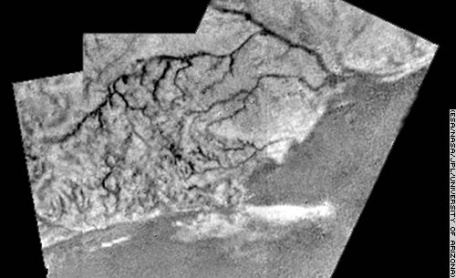

This
photograph, taken during Huygens'
descent to the surface of Titan in January 2005,
appears to clearly show detail
of a river channel. Titan appears
to be
covered in liquid
natural gas, with methane rain, lakes, rivers, and fog the
predominate features on this
moon of Saturn.
There is no oxygen on Titan; otherwise the planet would
explode.